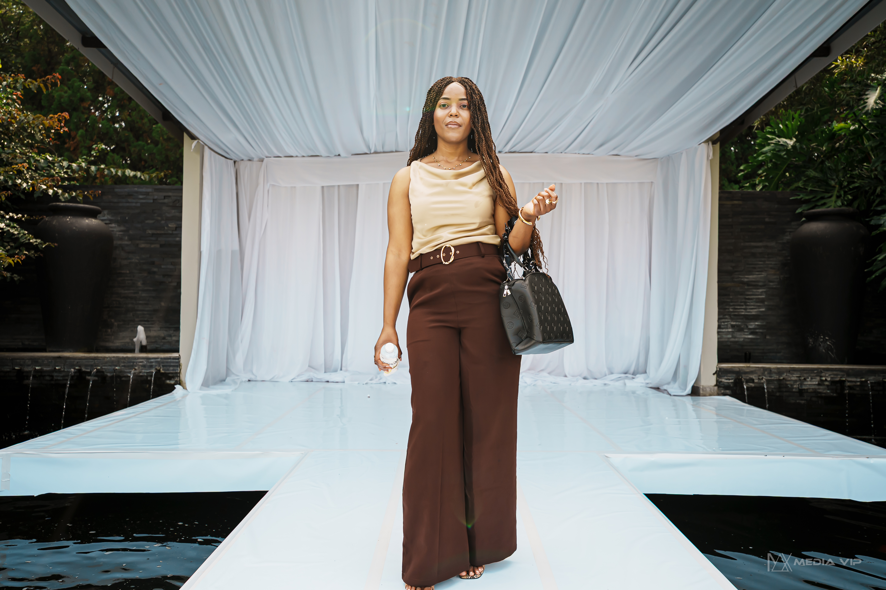

Vow Signature Weddings is a photography business founded in 2025 by Nzadi.Danielle, dedicated to capturing real emotions, meaningful moments, and timeless love stories. We go beyond simply taking pictures — we focus on telling your unique journey through natural, expressive, and carefully captured images. From the excitement of engagement to the beauty of the wedding day, every moment is documented with intention, creativity, and attention to detail. Our goal is to preserve not just memories, but the feeling, atmosphere, and emotions behind each moment so that they can be relived for years to come and shared as a lasting legacy.

Our mission is to capture genuine and meaningful wedding moments that reflect the true emotions, love, and connection between each couple. We aim to create a comfortable and enjoyable experience where clients can be themselves while we document their story in a natural and authentic way. Through creativity, passion, and attention to detail, we strive to turn special moments into timeless memories that couples can treasure forever.
Our vision is to become a trusted and recognised wedding photography brand known for documenting complete love stories across every stage of a couple’s journey. We aim to grow into a creative studio that not only captures wedding days, but also engagement sessions, behind-the-scenes preparations, and every meaningful moment in between. By offering a consistent and storytelling-driven approach, we seek to build lasting relationships with our clients and preserve their memories in a way that is both timeless and deeply personal.